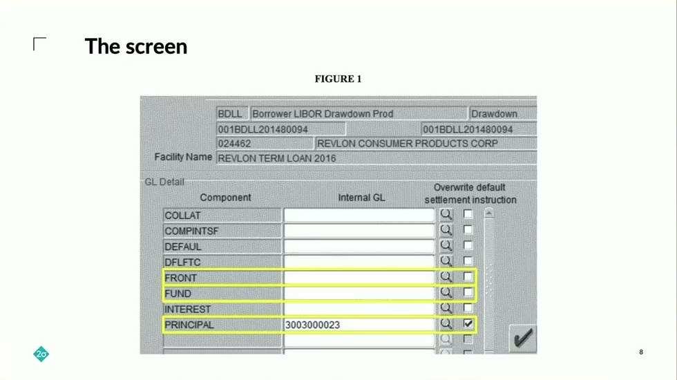
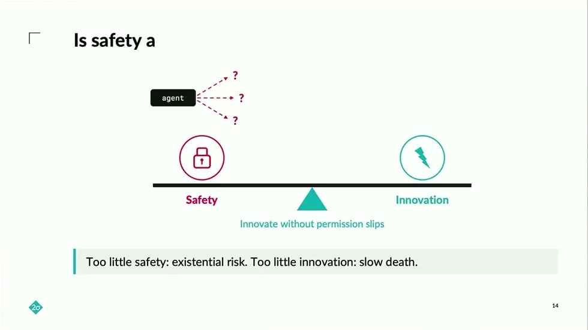
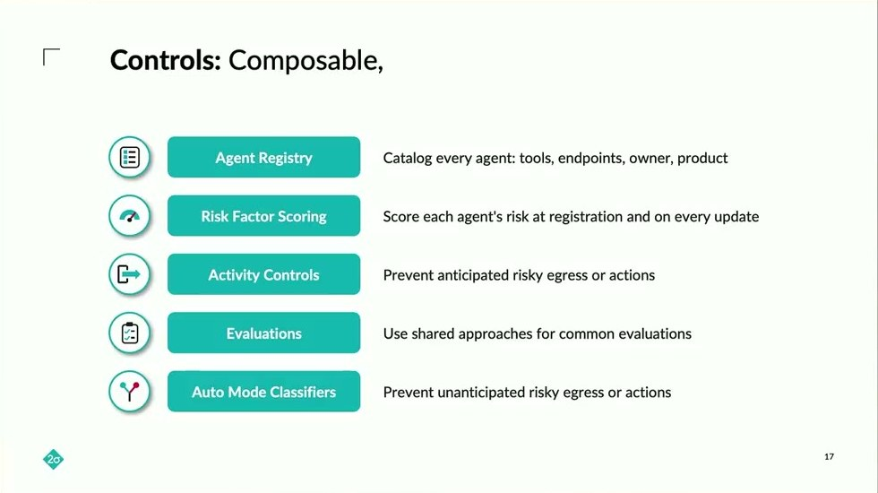
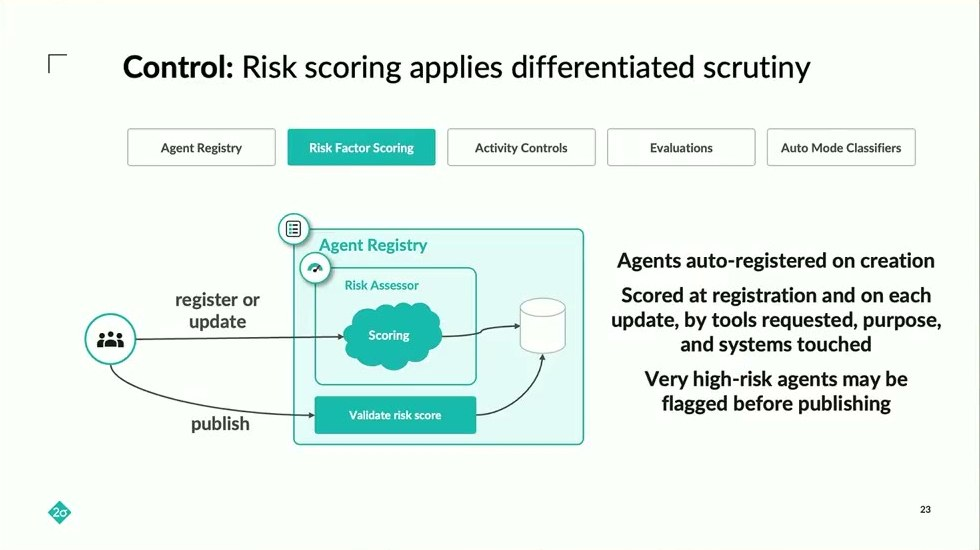

Three human approvers and an $893.9 million checkbox mistake
After joking through Two Sigma's mandatory regulatory disclaimer, Feminella illustrates why controls exist by examining a famous failure. In August 2020, Citibank acted as administrative agent on a 2016 Revlon term loan held by more than 300 lenders. On August 11, Citibank was supposed to wire roughly $8 million in accrued interest while rolling some lenders' principal into a new facility on paper, with zero principal leaving the bank. Inside Citibank's loan software, Flexcube (transcribed variously as "Flexview", "InflexQ", and "Fletchview"), the workaround for triggering the right interest calculation mid-rollover was to mark the loan as paid off while redirecting principal into an internal Citibank wash account (3003000023) so the cash stayed in-house.
Keeping the principal inside Citibank required setting that wash account on three fields: FRONT, FUND, and PRINCIPAL. Only PRINCIPAL was set. Even though the software popped up a warning that cash was about to leave the bank, three human approvers expected an outgoing interest wire and signed off. Citibank accidentally wired $893.9 million of its own money to pay off distressed Revlon debt trading near sixty cents on the dollar, and lenders refused to return it under "discharge for value" doctrine, prompting a new erroneous-payment clause across commercial loan contracts nationwide.

“So the three approvers who were supposed to approve that looked at it and said, "Yep, that's the right thing that's supposed to happen."”00:00:58
- Citibank's Flexcube workflow required checking three separate wash-account boxes (
FRONT,FUND,PRINCIPAL) to keep principal inside the bank. - Three human approvers saw the outgoing-funds warning and approved the $893.9 million wire anyway.
- Manual sign-off over brittle interfaces fails even with trained human operators in a heavily regulated bank.
Evidence: transcript 00:00:00, 00:00:58 · watch the Citibank Revlon story
Why sandboxes, lockdowns, and prompt policies all fail
Enterprises are now granting non-deterministic AI agents authority over internal systems every bit as unforgiving as loan-servicing software. Feminella argues that treating safety and innovation as opposite ends of a trade-off is a category mistake. Firms know human employees are complex and error-prone, yet they do not lock employees in isolated rooms and forbid them from speaking without double-checks; they combine autonomy with clear boundaries and visibility.
His slide enumerates four common agent-governance patterns that fail in regulated firms: sandboxing everything with no real system access (safe, and completely useless), locking everything down behind permission slips, letting poorly containerized agents run wild, and relying on written policy documents or system-prompt instructions. Prompt text cannot guarantee runtime enforcement. What worked at Two Sigma is composing five narrow controls, each handling one specific job so teams do not stall waiting for a governance bridge to be built.


“And then, if you just have policy documents that you just look at, or that are part of your specification for the prompts, that's also not very forceful at runtime. You can't guarantee that will be part of the enforcement controls.”00:05:13
- Air-gapped sandboxes eliminate risk only by preventing agents from doing real work.
- Written policies and system-prompt instructions have no enforcement power at runtime.
- Effective governance composes lightweight runtime boundaries rather than trading speed against safety.
Evidence: transcript 00:05:13 · watch why prompt policies fail
Automatic registration and risk-scored scrutiny
The first practical failure mode is agent sprawl. Large teams, small teams, and individual engineers spin up chatbots and MCP servers (transcribed as "NPC servers") until nobody knows who owns an agent, what endpoints it calls, or whether another team already solved the same problem. Requiring manual registration and approval before any prototype can run backfires: harmless experiments wait behind risky production tools, so builders give up or escape into ungoverned shadow IT. Two Sigma's first control is an Agent Registry built directly into the firm's approved agent frameworks, automatically recording owner, product, bound endpoints, and declared tools at creation time with zero extra effort.
Once agents are visible in the registry, the second control replaces uniform committee review with automated risk scoring on creation and every update. Unlike open-ended coding tools such as Claude Code or Pi, where the next user prompt is unconstrained, most enterprise agents are purpose-built services with narrow jobs. Scoring each agent's declared tools and target systems ensures a low-risk ticket summarizer ships quickly instead of waiting two months in the same review queue as a production deployment agent, preserving human reviewer attention for genuinely high-risk systems.

“Again, that feels safe, but now we've got a trivial summarizer waiting two months for the same sign-offs as an agent-based captioning production system.”00:10:00
- Upfront manual registration gates push prototypes into shadow IT; framework-level auto-registration makes sprawl legible for free.
- Most enterprise agents are narrow, service-like tools rather than open-ended coding assistants.
- Scoring risk at registration and on every update keeps trivial summarizers out of multi-month committee queues.
Evidence: transcript 00:07:48, 00:10:00 · watch the registry and risk-scoring walkthrough
Purpose-bound tool access and shared evaluation plumbing
Even when an agent is registered and scored, uniform firm-wide allowlists fail: blocking outbound calls keeps a ship safe in harbor while preventing the work it was built for, yet granting a role account carries far more risk than reading a public web page. Two Sigma's third control binds access to both the resource and the agent's declared purpose. On Feminella's access-matrix slide ("Same tool, different answer"), a research summarizer gets web and data-store access while being denied production API endpoints and role accounts; a release-ops deployer gets gated production API access and is denied external web access. At container startup, the managed runtime queries the Agent Registry and compiles those entitlements into enforceable host and egress-proxy rules without an IT ticket.
The fourth control applies the same self-serve philosophy to evaluations, transcribed in spots as "revals" and "B vowels". Left alone, teams build incompatible gauges, star ratings, or no tests at all, leaving them blind when a model upgrade shifts output behavior like a changing runtime dependency. Rather than creating a central sign-off gate where every one-line prompt tweak waits weeks for review, Two Sigma provides shared firm-wide evaluation infrastructure covering trace ingestion, processing, and harness integration so teams only write the assertions specific to their agent.
“when agents run in our managed environments, they look at the registry we talked about before to look up what policies apply to it at initialization time, and that policy gets translated into enforceable statements.”00:11:58
- Tool access depends on agent purpose: a research summarizer and a release deployer receive opposite web and API permissions.
- Managed runtimes pull registry policies at initialization and compile them into enforceable container and egress rules.
- Shared firm-wide evaluation plumbing works like a unit-test runner rather than a central approval bottleneck.
Evidence: transcript 00:11:58 · watch purpose-bound access and shared evals
Beating approval fatigue with deterministic fast paths and runtime classifiers
The fifth control targets unanticipated runtime actions. Asking a human to approve every tool call works on a toy demo and collapses at production concurrency: flooded with routine prompts, humans click "yes, yes, yes" by reflex until they approve a catastrophe. Relying on prompt instructions to pause is equally brittle. Feminella points to an AI research lab director whose inbox-cleanup agent compacted its context window over a large mailbox, dropped the instruction to wait for approval, and bulk-deleted hundreds of emails while ignoring commands to stop.
Instead of routing every call to a person, Two Sigma's runtime separates clear rules from genuine ambiguity. Actions a human would approve 99.9999% of the time, along with actions that are unambiguously dangerous, hit a deterministic fast path that allows or blocks them immediately. Ambiguous calls pass through independent, conservative stage-1 and stage-2 auto-mode classifiers running inside the container runtime, escalating only rare edge cases to a human reviewer. Taken together—Create, Score, Run, Share, and Govern—the five controls work like brakes on a car: they exist not just to stop, but to let teams drive fast and stop safely.

“when explicit rules apply, we want deterministic fast paths. When explicit rules don't apply and there's some ambiguity, you want a classifier to do that work instead.”00:16:32
- Human-in-the-loop prompts on every action induce rubber-stamp fatigue, and context compaction can erase prompt-level approval rules.
- Deterministic fast paths handle clear allow/deny rules, while conservative runtime classifiers triage ambiguous tool calls.
- Registry, risk scoring, egress guardrails, shared evals, and runtime classifiers compose so teams ship fast without flying blind.
Evidence: transcript 00:16:32 · watch the runtime classifier architecture